约 2084 个字 49 行代码 预计阅读时间 11 分钟
Chap 12 | “Local Search”
章节启示录
摆烂了。……
1.Framework of Local Search¶
-
Local:
在可行集中定义 \(\large neighborhoods\)
\(\large local \;\;optimum\) （局部最优）是 \(neighborhoods\) 的最佳解决方案 -
Search:
从可行的解决方案开始，然后在附近寻找更好的解决方案
如果无法改进，则实现局部最优
Neighbor Relation¶
- S ~ S' : S' is a neighboring solution of S – S' can be obtained by a small modification of S.(通过微小改动得到)
- N(S): neighborhood of S – the set { S': S ~ S' }.
SolutionType Gradient_descent()
{ Start from a feasible solution S FS ;
MinCost = cost(S);
while (1) {
S’ = Search( N(S) ); /* find the best S’ in N(S) */
CurrentCost = cost(S’);
if ( CurrentCost < MinCost ) {
MinCost = CurrentCost; S = S’;
}
else break;
}
return S;
}
2.[Example] The Vertex Cover Problem.¶
顶点覆盖问题：给定一个无向图 \(G=(V,E)\) ，找到一个最小的顶点集 \(S \subseteq V\) ，使得每条边 \((u,v)\) 都至少有一个端点在 \(S\) 中（即 \(u \in S \cup v\in S\)）
这个问题的可行解为 \(S=V\) ，即完全覆盖，其目标函数为 \(cost(S)=S\) 。即，我们尝试使用local search来降低 \(|S|\) 。
几个例子🌰
没有边，只有一堆点，显然空集就是最后的答案。
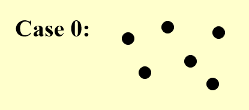
我们根据local search逐步删除每一个点，直到：
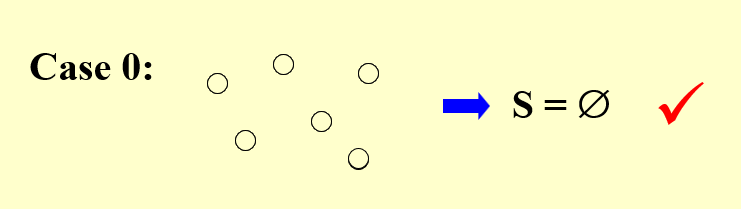
可以看到这个过程的曲线是这样的：也就是没有阻碍，梯度下降
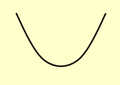
Case 1中，显然只要留第一个点就可以了，但如果我们从中间的点开始删除（或者说只要中间的点不是最后一个被删除时）就会出现剩下的任何一个点都不能删除的情况：
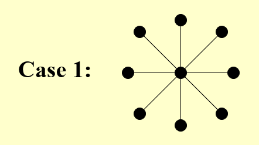
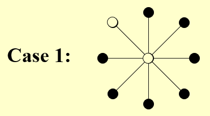
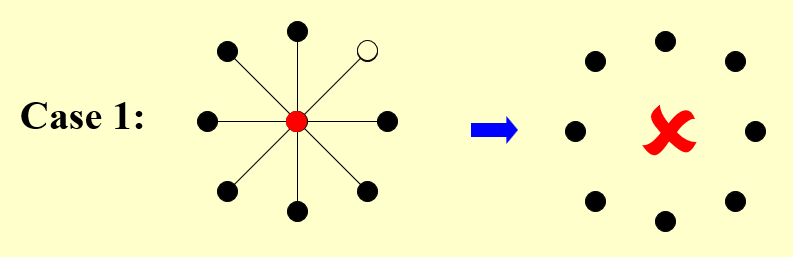
于是它的下降曲线是这样的：需要避开中间的点，否则就会停滞在第一个波谷中。
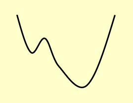
Case 2中,若是不选择奇数位置的点，而选择偶数位置的点依次删除，则无法实现最优解，它的下降曲线中的每个波谷就是偶数位置的点（因为只有都选择奇数位置的点才能实现最优解）。
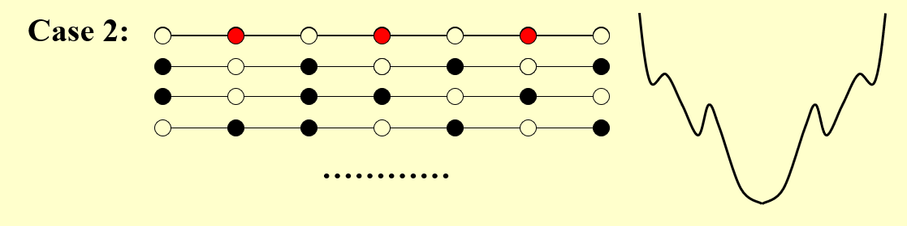
一个改进：The Metropolis Algorithm
SolutionType Metropolis() {
Define constants k and T;
Start from a feasible solution S \in FS ;
MinCost = cost(S);
while (1) {
S’ = Randomly chosen from N(S);
CurrentCost = cost(S’);
if ( CurrentCost < MinCost ) {
MinCost = CurrentCost; S = S’;
}
else {
With a probability e^{-\Delta cost / (kT)}, let S = S’;
else break;
}
}
return S;
}
注：对于case 1，有一定概率可以跳出local optimum得到正确解。但是对case 0，有可能在加1和减1之间无限震荡……
注：当（温度）T很高时，上坡的概率几乎为1，容易引起底部震荡；当T接近0时，上坡概率几乎为0，接近原始的梯度下降法。
- 与这个算法类似思想的一个问题是：模拟退火问题。
我在网上找到了一个有点意思的动图，可以看一下。
链接：模拟退火
3.[Example] Hopfield Neural Networks¶
Graph \(G = (V, E)\) with integer edge weights \(w\) (positive or negative).
- 如果 \(w_e< 0\) ，其中 \(e = (u， v)\)，那么 u 和 v 需要相同的状态;
- 如果 \(w_e> 0\) ，那么 u 和 v 需要不同的状态。
- 绝对值 \(|w_e|\) 表示此要求的强度（消耗/权重）。
输出：网络的配置 S ，即将状态 \(s_u\) 分配给每个节点 \(u\)。
可能没有符合所有边所需要求的配置。
来看一个更加具体一点的例子：¶
- 定义1：在配置 \(S\) 中，边$ e = (u， v)$ 如果$ w_es_us_v < 0 (w_e < 0 iff su = sv)$ 是 \(good\) ;否则，是 \(bad\) 。
- 定义2: 在配置 \(S\) 中，如果好边的权重 ≥ 坏边的权重，则称节点 \(u\) is satisfied。 $$\large \sum_{v:e=(u,v)\in E}w_es_us_v≤0 $$
- 定义3: 如果所有节点 is satisfied，则称配置 \(S\) 是稳定的。
一个例子🌰
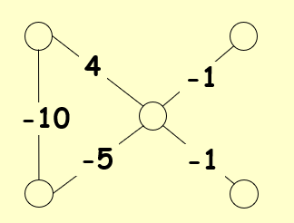
我们注意到，对 \(4\) 这条边来说，它是一条坏边。因此我们把中间那个点染黑（理由或许可以理解为代价小一些）。
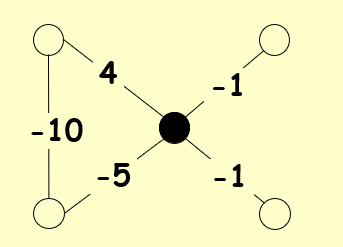
然后两条 \(-·\) 的边变成了坏边，我们需要把对应的两个顶点染黑。

经过验证，满足上述说的定义2。
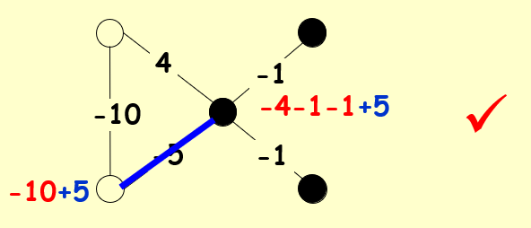
State-flipping Algorithm¶
ConfigType State_flipping()
{
Start from an arbitrary configuration S;
while ( ! IsStable(S) ) {
u = GetUnsatisfied(S);
su = - su;
}
return S;
}
问题：它一定能终止吗？¶
先给出结论：一定可以！
- 结论1：状态翻转算法在进行最多 \(W = \sum_e|we|\) 次迭代后一定会终止。
证明
先寻找一个度量函数：
\(\large \Phi (S) = \sum_{e\;is\;good}|w_e|\)
- 当 \(u\) 经过切换后 (S becomes S’):
- all good edges incident to u become bad
- all bad edges incident to u become good
- all other edges remain the same
\(\large \Phi(S^{\prime})=\Phi(S)-\sum_{e:e=(u,v)\in E}|w_{e\;is\;bad}|+\sum_{e:e=(u,v)\in E}|w_{e\;is\;good}| ≥ \Phi(S)+1\)
因为原来这个点是 unsatisfied 的，所以经过变换后好边一定变多了，又因为是整数，所以一定大于等于原来的度量函数加一。
所以显然有， \(0 ≤ \Phi ≤ W\) 。
与 local search 的关联¶
- Problem: To maximize \(\Phi\).
- Feasible solution set FS : configurations
-
S ~ S': S' can be obtained from S by flipping a single state
-
结论2：状态翻转算法中任何局部最大值以最大化 \(\Phi\) 都是稳定的配置。
Is it a polynomial time algorithm?
- 结论是它并不是。\(n\) 和 \(w\) 一起是一个 open question。
- 但 \(n\) 和 \(log w\) 就是一个可以在多项式时间内解决的问题了。
4.[Example] The Maximum Cut Problem.¶
最大切割问题：给定一个具有正整数边权重的无向图 \(G = (V， E)\)，我们找到一个节点分区 \((A， B)\)，使穿过切割的边的总权重最大化。 $$\large w(A,B):=\sum_{u\in A,v\in B}w_{uv} $$
与 local search 的关联¶
- Problem: To maximize \(w(A, B)\) 。\(\Phi(S) = \sum_{e\;is\;good}|w_e|\)
- Feasible solution set FS : any partition (A, B)
- S ~ S': S' can be obtained from S by moving one node from A to B, or one from B to A.
我们可以发现，其实这是 Hopfield Neural Networks 的一个特殊形式——所有的 \(w_e\) 都是正数。
ConfigType State_flipping()
{
Start from an arbitrary configuration S;
while ( ! IsStable(S) ) {
u = GetUnsatisfied(S);
su = - su;
}
return S;
}
三个问题¶
1.How good is this local optimum?¶
结论1：设 \((A， B)\) 为局部最优分区，设 \((A^*， B^*)\) 为全局最优分区，那么有 \(w(A， B) ≥ \frac{1}{2}w(A^*， B^*)\)。
证明
因为对于任意的 \(u\in A\) ，\((A, B)\) 是局部最优解，所以
这一步我们可以反过来想，如果不满足这个结论，那么至少有一个点需要从 \(A\) 移到 \(B\),但这与条件“局部最优解”相矛盾了！
接下来，我们把所有 \(u\in A\)的权重相加：
同样地，我们对 \(u\in B\) 的部分做一样的分析可以得到：
$$\large
2\sum_{\{{u,v\}}\subseteq B}w_{uv}≤w(A,B)
$$
所以我们有以下的式子：（式子左边是全局最优解，一定小于等于右边，右边则是各自属于 \(A,B\) 的权重以及跨越 \((A,B)\) 的权重之和，也就是所有的权重）
2.May NOT in polynomial time?¶
当没有“足够大”的改进时停止算法。
Big-improvement-flip：只选择一个节点，该节点在翻转时至少会增加以下大小的切割值：（这个过程中有精度的损失，但是做了加速，提高了效率，本质上还是一个 trade-off 的过程）
结论1：终止后，big-improvement-flip 算法返回一个cut \((A， B)\)，使得：
结论2：big-improvement-flip 算法在最多 \(O(n/ \varepsilon log W)\) 翻转后终止。
根据时间简单描述证明：
- 每次flip至少增加(1+epsilon/n)倍，其实是(1+2*epsilon/n)倍
- n/epsilon次flip之后，总增长至少是2倍。利用(1+1/x)^x >= 2, 如果x>=1
- 总量不超过W，而cut翻倍的次数不能超过logW
3.Try a better local?¶
- 解决方案的邻域应该足够丰富，以至于我们不容易陷入糟糕的局部最优状态;但
- 解决方案的邻域不应太大，因为我们希望能够有效地搜索邻域集以查找可能的局部移动。
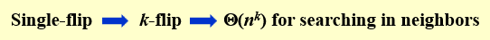
- K-L启发式算法：（翻过了尽量不再翻）
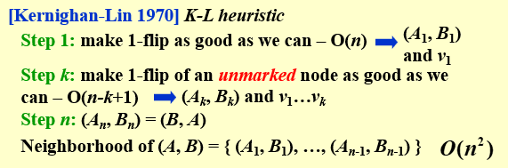
- 第一步找一个最优的；
- 第二步做标记，从未标记的点中寻找；（即使被标记的当中有更好的，也翻未标记的！）
K-L的分析还是未解决的。
复习时的一些补充
- 顶点覆盖问题中，一个点可以删除的条件是：这条边的另一个点没有被删除。如果可以删除，则任意删除一个。如果不能删除，则算法结束。剩下的点越少越好。
-
搜索空间指的是所有可能
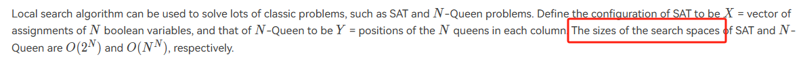